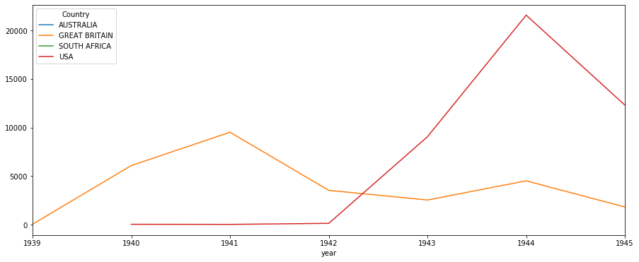

1. Exploratory Data Analysis in Action - EDA: Number of attacks¶
In this section we explore the Arial Bombing Data Set and apply techniques referred to as Exploratory Data Analysis.
Import statements
[1]:
import numpy as np
import pandas as pd
import matplotlib.pyplot as plt
%matplotlib inline
Global settings
[2]:
pd.options.display.max_rows = 999
pd.options.display.max_columns = 100
plt.rcParams["figure.figsize"] = [15,6]
Load data set
[1]:
import pickle
gdf_europe = pickle.load( open( "../data/gdf_europe", "rb" ) )
europe = pickle.load( open( "../data/europe.p", "rb" ) )
1.1. Research questions¶
@Number of attacks - Q1: How many attacks were launched between 1939 and 1945 over Europe? - Q2: Which Allied Force was responsible for the most of the attacks? Did this change over time? - Q3: Which Allied Force launched the most attacks against Germany? - Q4: Is there a seasonal pattern in the attacks against Germany (e.g. winter vs. summer)? - Q5: Which area experienced the highest number of attacks? Did the area change over time?
Q1: How many attacks were launched between 1939 and 1945 over Europe?
[24]:
## your code here
#df_noa["Target Country"].unique()
countries = europe.loc[europe["continent"] == 'Europe', ['name']]
countries["name"] = countries["name"].str.upper()
countriesList = list(countries["name"])
new = df_noa["Target Country"].isin(countriesList)
len(df_noa[new].index)
- execution-count
24
112123
Q2: Which Allied Force was responsible for the most of the attacks? Did this change over time?
[25]:
## your code here
df_allies = df_noa[pd.notnull(df_noa['Country'])]
df_allies2 = df_allies.groupby("Country")
#data.groupby(['date','type']).count()['amount'].plot(ax=ax)
# use unstack()
df_allies.groupby(['year','Country']).size().unstack().plot()
df_allies2.count()
#The attack from SA isnt on the list because it has only attacked once, meaning it is only displayed as a dot
#The attacks from AUS happen all in the same year, hence only a dot.
[25]:
| Mission ID | Mission Date | Aircraft Series | Target Country | Target City | Target Type | Target Industry | Target Latitude | Target Longitude | Attacking Aircraft | High Explosives Weight (Tons) | Total Weight (Tons) | year | month | day | Altitude (meters) | geometry | |
|---|---|---|---|---|---|---|---|---|---|---|---|---|---|---|---|---|---|
| Country | |||||||||||||||||
| AUSTRALIA | 4 | 4 | 4 | 4 | 4 | 0 | 0 | 4 | 4 | 4 | 0 | 4 | 4 | 4 | 4 | 2 | 4 |
| GREAT BRITAIN | 27999 | 27999 | 27992 | 27772 | 27999 | 23338 | 26828 | 27999 | 27999 | 15420 | 22179 | 24042 | 27999 | 27999 | 27999 | 8155 | 27999 |
| SOUTH AFRICA | 1 | 1 | 1 | 1 | 1 | 0 | 0 | 1 | 1 | 1 | 0 | 1 | 1 | 1 | 1 | 1 | 1 |
| USA | 43095 | 43095 | 43095 | 43093 | 43095 | 41800 | 41909 | 43095 | 43095 | 26228 | 35541 | 40599 | 43095 | 43095 | 43095 | 31597 | 43095 |

- fancy
Q3: Which Allied Force launched the most attacks against Germany?
[26]:
## your code here
# Just to confirm the results : df_allies.loc[(df_allies['Target Country'] == 'GERMANY') & (df_allies['Country'] == 'USA')]
df_germany = df_allies.loc[df_allies['Target Country'] == 'GERMANY']#.groupby('Country')
df_germany.groupby('Country').count()
#GREAT BRITAIN
[26]:
| Mission ID | Mission Date | Aircraft Series | Target Country | Target City | Target Type | Target Industry | Target Latitude | Target Longitude | Attacking Aircraft | High Explosives Weight (Tons) | Total Weight (Tons) | year | month | day | Altitude (meters) | geometry | |
|---|---|---|---|---|---|---|---|---|---|---|---|---|---|---|---|---|---|
| Country | |||||||||||||||||
| GREAT BRITAIN | 18929 | 18929 | 18929 | 18929 | 18929 | 16776 | 18887 | 18929 | 18929 | 9728 | 16112 | 16823 | 18929 | 18929 | 18929 | 6893 | 18929 |
| USA | 12566 | 12566 | 12566 | 12566 | 12566 | 12566 | 12566 | 12566 | 12566 | 8516 | 10565 | 12327 | 12566 | 12566 | 12566 | 9389 | 12566 |
[27]:
## your code here
df_winter = df_germany.loc[((df_germany['month'] == 12) |
(df_germany['month'] == 1 ) |
(df_germany['month'] == 2 ))]
df_summer = df_germany.loc[((df_germany['month'] == 6) |
(df_germany['month'] == 7 ) |
(df_germany['month'] == 8 ))]
plt.subplot(1, 2, 1) # 1 line, 2 rows, index nr 1 (first position in the subplot)
df_winter_plot = df_winter.groupby(df_winter["month"])['Country'].count().plot(kind="bar", width = 0.3, color = "paleturquoise")
df_winter_plot.set_title("Winter attacks", size = 18, fontweight = "bold")
df_winter_plot.set_xlabel("Months", size = 14)
df_winter_plot.set_ylabel("Frequencies", size = 14)
plt.subplot(1, 2, 2) # 1 line, 2 rows, index nr 2 (second position in the subplot)
df_summer_plot = df_summer.groupby(df_summer["month"])['Country'].count().plot(kind="bar", width = 0.3, color = "gold")
df_summer_plot.set_title("Summer attacks", size = 18, fontweight = "bold")
df_summer_plot.set_xlabel("Months", size = 14)
df_summer_plot.set_ylabel("Frequencies", size = 14)
plt.show()
- fancy

Q5: Which area in Germany experienced the highest number of attacks? Did the area change over time?
[28]:
## your code here
df_germany = df_noa.loc[df_noa['Target Country'] == 'GERMANY']
df_tally = df_germany.groupby(["Target City"]).count()
df_tally.loc[df_tally["Target Country"] == df_tally["Target Country"].max()]
[28]:
| Mission ID | Mission Date | Country | Aircraft Series | Target Country | Target Type | Target Industry | Target Latitude | Target Longitude | Attacking Aircraft | High Explosives Weight (Tons) | Total Weight (Tons) | year | month | day | Altitude (meters) | geometry | |
|---|---|---|---|---|---|---|---|---|---|---|---|---|---|---|---|---|---|
| Target City | |||||||||||||||||
| BERLIN | 2543 | 2543 | 1703 | 2543 | 2543 | 2543 | 2541 | 2543 | 2543 | 1773 | 2165 | 2452 | 2543 | 2543 | 2543 | 1733 | 2543 |
[12]:
df_change = df_noa.loc[df_noa['Target City'] == 'BERLIN']
df_change.groupby("year")["Target City"].count().plot()
#df_change.loc[df_change["year"] == 1944].count()
[12]:
<matplotlib.axes._subplots.AxesSubplot at 0x216b3363908>
[ ]: